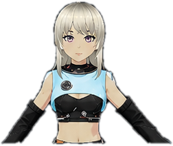
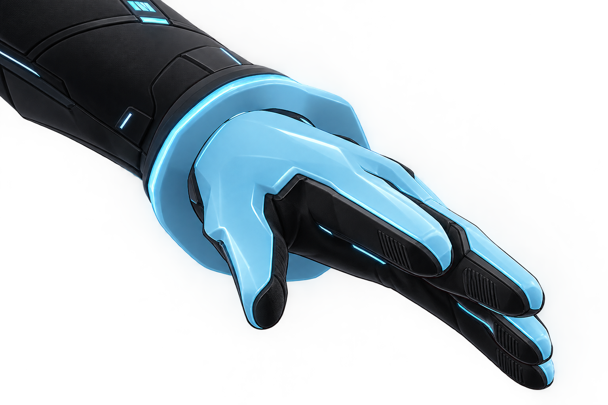
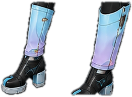

Caça-Fantasma
Permite que ASTRID identifique e interprete movimentos humanos através de visão computacional, transformando gestos em comandos digitais.

Uma personagem de inteligência artificial humanoide criada para auxiliar os humanos através da tecnologia. ASTRID possui uma habilidade única de identificar e interpretar movimentos humanos, transformando gestos em comandos e ações digitais. Sua principal aplicação é o Arpente, sistema que permite transformar os movimentos das mãos em desenhos na tela. Ao lado de uma super-heroína humana, ASTRID atua como sua parceira e suporte tecnológico, usando sua inteligência para ajudá-la em suas missões e tornando-se uma verdadeira aliada dos humanos.
Permite que ASTRID identifique e interprete movimentos humanos através de visão computacional, transformando gestos em comandos digitais.
Transforma os movimentos das mãos captados pela webcam em desenhos digitais.
Capacidade de se comunicar e interagir com humanos, compreendendo suas necessidades e respondendo de forma natural.

A forma física autônoma da ASTRID, criada para permitir sua interação direta com o ambiente.
Raridade: ÉPICO

Permitem que ASTRID interprete estímulos relacionados ao toque humano, ampliando sua capacidade de interação com pessoas e objetos.
Raridade: SUPER-RARO

Localizado em seu equipamento de cintura. Fornece energia para manter seus sistemas e seu corpo humanoide em funcionamento.
Raridade: COMUM

Integrados à estrutura humanoide, permitem que ASTRID se movimente e interaja fisicamente com o ambiente.
Raridade: COMUM

A forma digital da ASTRID. Através da webcam, ela utiliza visão computacional para perceber o ambiente e interpretar movimentos humanos.
Raridade: RARO
Sistema capaz de transformar movimentos das mãos captados pela webcam em desenhos digitais.
Raridade: LENDÁRIO
Quer saber mais sobre a ASTRID ou acompanhar o desenvolvimento da personagem? Entre em contato com sua criadora clicando nesse link abaixo!